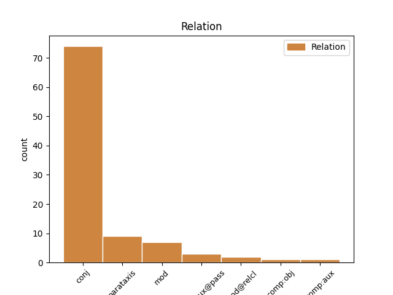

Distribution of features within this leaf

Agreement Rules sorted by frequency.
- When the dependent token is the conjunct(conj) of the head token, and the head token is VERB and the dependent token is VERB.
1 Я _ _ _ _ 0 _ _ _
2 сначала _ _ _ _ 0 _ _ _
3 пригорюнилась _ _ _ _ 0 _ _ _
4 , _ _ _ _ 0 _ _ _
5 но _ _ _ _ 0 _ _ _
6 тут _ _ _ _ 0 _ _ _
7 позвонил звонить VERB _ Aspect=Perf|Gender=Masc|Mood=Ind|Number=Sing|Tense=Past|VerbForm=Fin|Voice=Act 0 _ _ _
8 Сева _ _ _ _ 0 _ _ _
9 и _ _ _ _ 0 _ _ _
10 сказал сказать VERB _ Aspect=Perf|Gender=Masc|Mood=Ind|Number=Sing|Tense=Past|VerbForm=Fin|Voice=Act 7 conj _ SpaceAfter=No
11 , _ _ _ _ 0 _ _ _
12 что _ _ _ _ 0 _ _ _
13 у _ _ _ _ 0 _ _ _
14 него _ _ _ _ 0 _ _ _
15 есть _ _ _ _ 0 _ _ _
16 два _ _ _ _ 0 _ _ _
17 билета _ _ _ _ 0 _ _ _
18 , _ _ _ _ 0 _ _ _
19 абсолютно _ _ _ _ 0 _ _ _
20 безвозмездно _ _ _ _ 0 _ _ _
21 . _ _ _ _ 0 _ _ _
1 Осуществила Осуществить VERB _ Aspect=Perf|Gender=Fem|Mood=Ind|Number=Sing|Tense=Past|VerbForm=Fin|Voice=Act 0 _ _ _
2 давнюю _ _ _ _ 0 _ _ _
3 мечту _ _ _ _ 0 _ _ _
4 - _ _ _ _ 0 _ _ _
5 спела петь VERB _ Aspect=Perf|Gender=Fem|Mood=Ind|Number=Sing|Tense=Past|VerbForm=Fin|Voice=Act 1 parataxis _ _
6 Where _ _ _ _ 0 _ _ _
7 the _ _ _ _ 0 _ _ _
8 wild _ _ _ _ 0 _ _ _
9 roses _ _ _ _ 0 _ _ _
10 grow _ _ _ _ 0 _ _ _
11 , _ _ _ _ 0 _ _ _
12 на _ _ _ _ 0 _ _ _
13 два _ _ _ _ 0 _ _ _
14 голоса _ _ _ _ 0 _ _ _
15 с _ _ _ _ 0 _ _ _
16 луганчанином _ _ _ _ 0 _ _ _
17 - _ _ _ _ 0 _ _ _
18 и _ _ _ _ 0 _ _ _
19 - _ _ _ _ 0 _ _ _
20 айос-евангелистом _ _ _ _ 0 _ _ _
21 Лешей _ _ _ _ 0 _ _ _
22 . _ _ _ _ 0 _ _ _
1 Что _ _ _ _ 0 _ _ _
2 упало _ _ _ _ 0 _ _ _
3 то _ _ _ _ 0 _ _ _
4 пропало _ _ _ _ 0 _ _ _
5 Что _ _ _ _ 0 _ _ _
6 прошло пройти VERB VERB Aspect=Perf|Gender=Neut|Mood=Ind|Number=Sing|Tense=Past|VerbForm=Fin|Voice=Act 7 mod _ _
7 то то PRON NOUN Case=Nom|Gender=Neut|Number=Sing 0 _ _ _
8 миновало _ _ _ _ 0 _ _ _
9 На _ _ _ _ 0 _ _ _
10 сегодня _ _ _ _ 0 _ _ _
11 кончен _ _ _ _ 0 _ _ _
12 кон _ _ _ _ 0 _ _ _
13 Пьер _ _ _ _ 0 _ _ _
14 и _ _ _ _ 0 _ _ _
15 Петя _ _ _ _ 0 _ _ _
16 вышли _ _ _ _ 0 _ _ _
17 вон _ _ _ _ 0 _ _ _
1 Был быть AUX VERB Aspect=Imp|Gender=Masc|Mood=Ind|Number=Sing|Tense=Past|VerbForm=Fin|Voice=Act 0 _ _ _
2 Иов _ _ _ _ 0 _ _ _
3 Господом _ _ _ _ 0 _ _ _
4 вознагражден вознаградить VERB VERB Aspect=Perf|Gender=Masc|Number=Sing|Tense=Past|Variant=Short|VerbForm=Part|Voice=Pass 1 comp:aux@pass _ _
5 И _ _ _ _ 0 _ _ _
6 трижды _ _ _ _ 0 _ _ _
7 , _ _ _ _ 0 _ _ _
8 и _ _ _ _ 0 _ _ _
9 четырежды _ _ _ _ 0 _ _ _
10 возвышен _ _ _ _ 0 _ _ _
11 Противу _ _ _ _ 0 _ _ _
12 прежнего _ _ _ _ 0 _ _ _
13 . _ _ _ _ 0 _ _ _
1 Думаем _ _ _ _ 0 _ _ _
2 - _ _ _ _ 0 _ _ _
3 надо _ _ _ _ 0 _ _ _
4 эту _ _ _ _ 0 _ _ _
5 неприятную неприятный ADJ _ Case=Acc|Degree=Pos|Gender=Fem|Number=Sing 0 _ _ _
6 и _ _ _ _ 0 _ _ _
7 устаревшую устареть VERB _ Aspect=Perf|Case=Acc|Gender=Fem|Number=Sing|Tense=Past|VerbForm=Part|Voice=Act 5 conj _ _
8 морально _ _ _ _ 0 _ _ _
9 барную _ _ _ _ 0 _ _ _
10 часть _ _ _ _ 0 _ _ _
11 быстренько _ _ _ _ 0 _ _ _
12 проскочить _ _ _ _ 0 _ _ _
13 , _ _ _ _ 0 _ _ _
14 и _ _ _ _ 0 _ _ _
15 выпьем _ _ _ _ 0 _ _ _
16 по _ _ _ _ 0 _ _ _
17 пиву _ _ _ _ 0 _ _ _
18 в _ _ _ _ 0 _ _ _
19 одном _ _ _ _ 0 _ _ _
20 из _ _ _ _ 0 _ _ _
21 более _ _ _ _ 0 _ _ _
22 элегантно-хипстерских _ _ _ _ 0 _ _ _
23 мест _ _ _ _ 0 _ _ _
24 на _ _ _ _ 0 _ _ _
25 канале _ _ _ _ 0 _ _ _
26 . _ _ _ _ 0 _ _ _
1 Тот тот DET _ Case=Nom|Gender=Masc|Number=Sing 0 _ _ _
2 , _ _ _ _ 0 _ _ _
3 кто _ _ _ _ 0 _ _ _
4 чудом _ _ _ _ 0 _ _ _
5 выжил выжить VERB _ Aspect=Perf|Gender=Masc|Mood=Ind|Number=Sing|Tense=Past|VerbForm=Fin|Voice=Act 1 mod@relcl _ SpaceAfter=No
6 , _ _ _ _ 0 _ _ _
7 всегда _ _ _ _ 0 _ _ _
8 в _ _ _ _ 0 _ _ _
9 гостях _ _ _ _ 0 _ _ _
10 в _ _ _ _ 0 _ _ _
11 этом _ _ _ _ 0 _ _ _
12 мире _ _ _ _ 0 _ _ _
13 — _ _ _ _ 0 _ _ _
14 в _ _ _ _ 0 _ _ _
15 песках _ _ _ _ 0 _ _ _
16 , _ _ _ _ 0 _ _ _
17 в _ _ _ _ 0 _ _ _
18 снегах _ _ _ _ 0 _ _ _
19 , _ _ _ _ 0 _ _ _
20 Хоть _ _ _ _ 0 _ _ _
21 этот _ _ _ _ 0 _ _ _
22 мир _ _ _ _ 0 _ _ _
23 стоит _ _ _ _ 0 _ _ _
24 на _ _ _ _ 0 _ _ _
25 его _ _ _ _ 0 _ _ _
26 костях _ _ _ _ 0 _ _ _
27 , _ _ _ _ 0 _ _ _
28 на _ _ _ _ 0 _ _ _
29 его _ _ _ _ 0 _ _ _
30 руках _ _ _ _ 0 _ _ _
31 и _ _ _ _ 0 _ _ _
32 ногах _ _ _ _ 0 _ _ _
33 ! _ _ _ _ 0 _ _ _
1 Чем _ _ _ _ 0 _ _ _
2 помешали _ _ _ _ 0 _ _ _
3 бэби-боксы _ _ _ _ 0 _ _ _
4 госпоже _ _ _ _ 0 _ _ _
5 мизулинойЭто _ _ _ _ 0 _ _ _
6 настоящий _ _ _ _ 0 _ _ _
7 жириновский Жириновский PROPN _ Animacy=Anim|Case=Nom|Gender=Masc|Number=Sing 0 _ _ _
8 в _ _ _ _ 0 _ _ _
9 юбке _ _ _ _ 0 _ _ _
10 , _ _ _ _ 0 _ _ _
11 что _ _ _ _ 0 _ _ _
12 хотел хотеть VERB _ Aspect=Imp|Gender=Masc|Mood=Ind|Number=Sing|Tense=Past|VerbForm=Fin|Voice=Act 7 mod@relcl _ _
13 запретить _ _ _ _ 0 _ _ _
14 заниматься _ _ _ _ 0 _ _ _
15 сексом _ _ _ _ 0 _ _ _
16 , _ _ _ _ 0 _ _ _
17 чтоб _ _ _ _ 0 _ _ _
18 беречь _ _ _ _ 0 _ _ _
19 силы _ _ _ _ 0 _ _ _
20 . _ _ _ _ 0 _ _ _
1 Покрывало покрывать VERB _ Aspect=Imp|Gender=Neut|Mood=Ind|Number=Sing|Tense=Past|VerbForm=Fin|Voice=Act 0 _ _ _
2 , _ _ _ _ 0 _ _ _
3 пропускающее пропускать VERB _ Aspect=Imp|Case=Acc|Gender=Neut|Number=Sing|Tense=Pres|VerbForm=Part|Voice=Act 1 mod _ _
4 песок _ _ _ _ 0 _ _ _
1 Юрий Юрий PROPN _ Animacy=Anim|Case=Nom|Gender=Masc|Number=Sing 0 _ _ _
2 Богатиков _ _ _ _ 0 _ _ _
3 - _ _ _ _ 0 _ _ _
4 Давно _ _ _ _ 0 _ _ _
5 не _ _ _ _ 0 _ _ _
6 бывал бывать VERB _ Aspect=Imp|Gender=Masc|Mood=Ind|Number=Sing|Tense=Past|VerbForm=Fin|Voice=Act 1 parataxis _ _
7 я _ _ _ _ 0 _ _ _
8 в _ _ _ _ 0 _ _ _
9 Донбассе _ _ _ _ 0 _ _ _
1 он _ _ _ _ 0 _ _ _
2 вдруг _ _ _ _ 0 _ _ _
3 затосковал _ _ _ _ 0 _ _ _
4 о _ _ _ _ 0 _ _ _
5 точке _ _ _ _ 0 _ _ _
6 он _ _ _ _ 0 _ _ _
7 вдруг _ _ _ _ 0 _ _ _
8 закуковал _ _ _ _ 0 _ _ _
9 о _ _ _ _ 0 _ _ _
10 Риме _ _ _ _ 0 _ _ _
11 и _ _ _ _ 0 _ _ _
12 поглядите _ _ _ _ 0 _ _ _
13 стал _ _ _ _ 0 _ _ _
14 он _ _ _ _ 0 _ _ _
15 зримей _ _ _ _ 0 _ _ _
16 и _ _ _ _ 0 _ _ _
17 очутился _ _ _ _ 0 _ _ _
18 и _ _ _ _ 0 _ _ _
19 возник _ _ _ _ 0 _ _ _
20 он _ _ _ _ 0 _ _ _
21 был быть AUX VERB Aspect=Imp|Gender=Masc|Mood=Ind|Number=Sing|Tense=Past|VerbForm=Fin|Voice=Act 0 _ _ _
22 мечом _ _ _ _ 0 _ _ _
23 он _ _ _ _ 0 _ _ _
24 стал стать VERB VERB Aspect=Perf|Gender=Masc|Mood=Ind|Number=Sing|Tense=Past|VerbForm=Fin|Voice=Act 21 conj _ _
25 родник _ _ _ _ 0 _ _ _
1 могучий _ _ _ _ 0 _ _ _
2 панцырь _ _ _ _ 0 _ _ _
3 был быть AUX VERB Aspect=Imp|Gender=Masc|Mood=Ind|Number=Sing|Tense=Past|VerbForm=Fin|Voice=Act 0 _ _ _
4 утыкан утыкивать VERB VERB Aspect=Perf|Gender=Masc|Number=Sing|Tense=Past|Variant=Short|VerbForm=Part|Voice=Pass 3 comp:aux _ _
5 шмелями _ _ _ _ 0 _ _ _
6 плавунами _ _ _ _ 0 _ _ _
7 и _ _ _ _ 0 _ _ _
8 львами _ _ _ _ 0 _ _ _
1 Блажен блаженный ADJ _ Degree=Pos|Gender=Masc|Number=Sing|Variant=Short 0 _ _ _
2 , _ _ _ _ 0 _ _ _
3 кто _ _ _ _ 0 _ _ _
4 в _ _ _ _ 0 _ _ _
5 сей _ _ _ _ 0 _ _ _
6 земле _ _ _ _ 0 _ _ _
7 страстей _ _ _ _ 0 _ _ _
8 На _ _ _ _ 0 _ _ _
9 нивах _ _ _ _ 0 _ _ _
10 сердца _ _ _ _ 0 _ _ _
11 сеял сеять VERB _ Aspect=Imp|Gender=Masc|Mood=Ind|Number=Sing|Tense=Past|VerbForm=Fin|Voice=Act 1 mod _ _
12 слезы _ _ _ _ 0 _ _ _
13 , _ _ _ _ 0 _ _ _
14 Тому _ _ _ _ 0 _ _ _
15 ни _ _ _ _ 0 _ _ _
16 бури _ _ _ _ 0 _ _ _
17 , _ _ _ _ 0 _ _ _
18 ни _ _ _ _ 0 _ _ _
19 морозы _ _ _ _ 0 _ _ _
20 В _ _ _ _ 0 _ _ _
21 день _ _ _ _ 0 _ _ _
22 жатвы _ _ _ _ 0 _ _ _
23 той _ _ _ _ 0 _ _ _
24 не _ _ _ _ 0 _ _ _
25 повредят _ _ _ _ 0 _ _ _
26 ; _ _ _ _ 0 _ _ _
1 То то PRON _ Animacy=Inan|Case=Nom|Gender=Neut|Number=Sing 0 _ _ _
2 есть _ _ _ _ 0 _ _ _
3 с _ _ _ _ 0 _ _ _
4 момента _ _ _ _ 0 _ _ _
5 рождения _ _ _ _ 0 _ _ _
6 детей _ _ _ _ 0 _ _ _
7 никогда _ _ _ _ 0 _ _ _
8 не _ _ _ _ 0 _ _ _
9 приходило приходить VERB _ Aspect=Imp|Gender=Neut|Mood=Ind|Number=Sing|Tense=Past|VerbForm=Fin|Voice=Act 1 comp:obj _ _
10 мне _ _ _ _ 0 _ _ _
11 в _ _ _ _ 0 _ _ _
12 голову _ _ _ _ 0 _ _ _
13 тусить _ _ _ _ 0 _ _ _
14 до _ _ _ _ 0 _ _ _
15 утра _ _ _ _ 0 _ _ _
16 неведомо _ _ _ _ 0 _ _ _
17 где _ _ _ _ 0 _ _ _
18 . _ _ _ _ 0 _ _ _
1 Так _ _ _ _ 0 _ _ _
2 вот _ _ _ _ 0 _ _ _
3 , _ _ _ _ 0 _ _ _
4 встреченный встречить VERB _ Aspect=Perf|Case=Nom|Gender=Masc|Number=Sing|Tense=Past|VerbForm=Part|Voice=Pass 6 mod _ _
5 нами _ _ _ _ 0 _ _ _
6 Кирилл Кирилл PROPN _ Animacy=Anim|Case=Nom|Gender=Masc|Number=Sing 0 _ _ _
7 очень _ _ _ _ 0 _ _ _
8 удивлялся _ _ _ _ 0 _ _ _
9 . _ _ _ _ 0 _ _ _
Disagree Examples:
1 RT _ _ _ _ 0 _ _ _
2 @xxxxxx _ _ _ _ 0 _ _ _
3 : _ _ _ _ 0 _ _ _
4 Поветкин Поветкин PROPN _ Animacy=Anim|Case=Nom|Gender=Masc|Number=Sing 0 _ _ _
5 : _ _ _ _ 0 _ _ _
6 ситуация _ _ _ _ 0 _ _ _
7 с _ _ _ _ 0 _ _ _
8 мельдонием _ _ _ _ 0 _ _ _
9 меня _ _ _ _ 0 _ _ _
10 точно _ _ _ _ 0 _ _ _
11 не _ _ _ _ 0 _ _ _
12 ослабила ослабить VERB _ Aspect=Perf|Gender=Fem|Mood=Ind|Number=Sing|Tense=Past|VerbForm=Fin|Voice=Act 4 parataxis _ _
1 Попытка _ _ _ _ 0 _ _ _
2 не _ _ _ _ 0 _ _ _
3 удалась _ _ _ _ 0 _ _ _
4 , _ _ _ _ 0 _ _ _
5 а _ _ _ _ 0 _ _ _
6 потом _ _ _ _ 0 _ _ _
7 отцу _ _ _ _ 0 _ _ _
8 народов _ _ _ _ 0 _ _ _
9 ударила ударить VERB _ Aspect=Perf|Gender=Fem|Mood=Ind|Number=Sing|Tense=Past|VerbForm=Fin|Voice=Act 0 _ _ _
10 в _ _ _ _ 0 _ _ _
11 голову _ _ _ _ 0 _ _ _
12 уже _ _ _ _ 0 _ _ _
13 другая _ _ _ _ 0 _ _ _
14 моча _ _ _ _ 0 _ _ _
15 , _ _ _ _ 0 _ _ _
16 и _ _ _ _ 0 _ _ _
17 он _ _ _ _ 0 _ _ _
18 начал начать VERB _ Aspect=Perf|Gender=Masc|Mood=Ind|Number=Sing|Tense=Past|VerbForm=Fin|Voice=Act 9 conj _ _
19 бороться _ _ _ _ 0 _ _ _
20 против _ _ _ _ 0 _ _ _
21 национализма _ _ _ _ 0 _ _ _
22 и _ _ _ _ 0 _ _ _
23 иностранной _ _ _ _ 0 _ _ _
24 агентуры _ _ _ _ 0 _ _ _
25 . _ _ _ _ 0 _ _ _
1 Мимо _ _ _ _ 0 _ _ _
2 проходящим проходить VERB _ Aspect=Imp|Case=Ins|Gender=Neut|Number=Sing|Tense=Pres|VerbForm=Part|Voice=Act 0 _ _ _
3 .. _ _ _ _ 0 _ _ _
4 , _ _ _ _ 0 _ _ _
5 косо _ _ _ _ 0 _ _ _
6 смотрящим смотреть VERB _ Aspect=Imp|Case=Ins|Gender=Masc|Number=Sing|Tense=Pres|VerbForm=Part|Voice=Act 2 conj _ SpaceAfter=No
7 . _ _ _ _ 0 _ _ _
1 тут _ _ _ _ 0 _ _ _
2 появилась появиться VERB VERB Aspect=Perf|Gender=Fem|Mood=Ind|Number=Sing|Tense=Past|VerbForm=Fin|Voice=Mid 0 _ _ _
3 пустота _ _ _ _ 0 _ _ _
4 и _ _ _ _ 0 _ _ _
5 понял понять VERB VERB Aspect=Perf|Gender=Masc|Mood=Ind|Number=Sing|Tense=Past|VerbForm=Fin|Voice=Act 2 conj _ _
6 я _ _ _ _ 0 _ _ _
7 что _ _ _ _ 0 _ _ _
8 всё _ _ _ _ 0 _ _ _
9 роскошно _ _ _ _ 0 _ _ _
10 но _ _ _ _ 0 _ _ _
11 пакостно _ _ _ _ 0 _ _ _
12 тоскливо _ _ _ _ 0 _ _ _
13 тошно _ _ _ _ 0 _ _ _
1 выходило выходить VERB VERB Aspect=Imp|Gender=Neut|Mood=Ind|Number=Sing|Tense=Past|VerbForm=Fin|Voice=Act 0 _ _ _
2 море _ _ _ _ 0 _ _ _
3 в _ _ _ _ 0 _ _ _
4 гости _ _ _ _ 0 _ _ _
5 с _ _ _ _ 0 _ _ _
6 ним _ _ _ _ 0 _ _ _
7 под _ _ _ _ 0 _ _ _
8 руку _ _ _ _ 0 _ _ _
9 шла идти VERB VERB Aspect=Imp|Gender=Fem|Mood=Ind|Number=Sing|Tense=Past|VerbForm=Fin|Voice=Act 1 conj _ _
10 звезда _ _ _ _ 0 _ _ _
11 и _ _ _ _ 0 _ _ _
12 сказало _ _ _ _ 0 _ _ _
13 море _ _ _ _ 0 _ _ _
14 бросьте _ _ _ _ 0 _ _ _
15 думать _ _ _ _ 0 _ _ _
16 бегать _ _ _ _ 0 _ _ _
17 ерунда _ _ _ _ 0 _ _ _